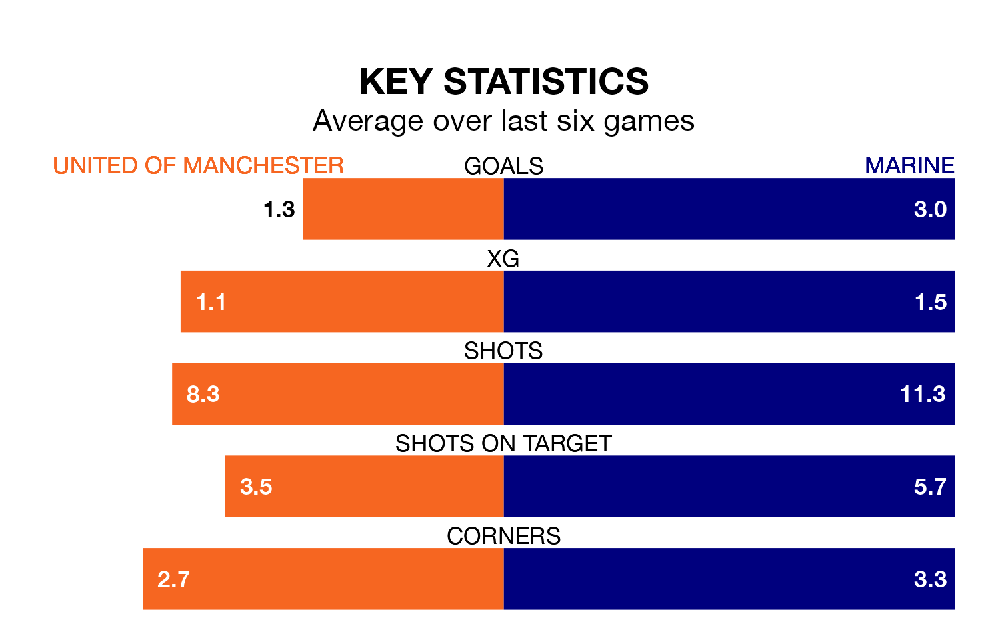

Marine are strong favourites to take all three points despite United of Manchester's home advantage in Tuesday's late match at Broadhurst Park.
*Betting Company* are offering odds of 1.91 on Marine sealing the win, with the visitors sitting second in Northern Premier League table.
United of Manchester, who are 15th in the league and 17 points behind Marine, are priced at 2.75 to win. A draw is set at 4.4.
With 61 goals in 28 games so far this season, Marine are the league's second-highest scorers with 2.2 goals per game. And they are conceding fewer than average, letting in 35 goals at a rate of 1.2 per game.
United of Manchester, meanwhile, are below average scorers, with 1.5 goals per game, compared to a league average of 1.7. They have conceded 2.0 goals per game.
In the last 10 years, United of Manchester and Marine have played each other on seven occasions. United of Manchester won two of them, Marine three, and they drew twice.
On average, F.C. United scored 1.3 goals and Marine 1.7 in those matches.
Their last meeting was on August 15, when Marine won 5-1 at home.
F.C. United are in mixed form in Northern Premier League, with three wins and three losses from their last six games.
With four wins and two losses over that period, the away team's form is better – they have taken 12 points from 18, compared to the hosts' nine.
United of Manchester's last match was on Saturday, a 3-0 loss against Matlock Town.
Marine beat Worksop Town 2-1 last time out, also on Saturday.
Updated: 13:20 (UTC), 29/01/24